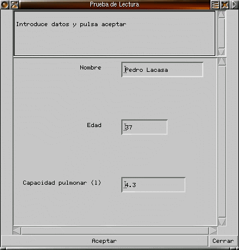
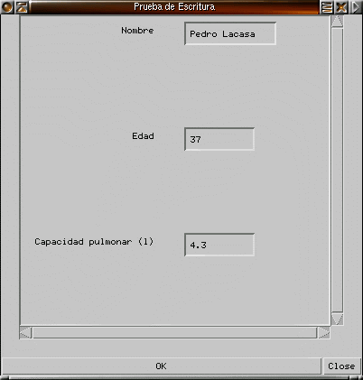
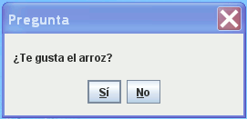
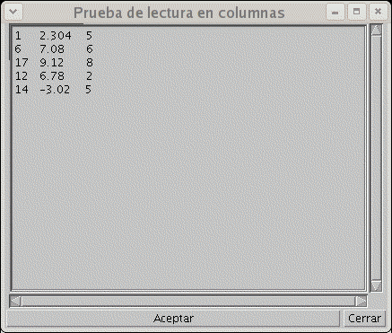

(c) Universidad de Cantabria, SPAIN
Autores: Michael González mgh@unican.es y Mariano Benito Hoz
<mbenitohoz at gmail dot com>
El paquete fundamentos
es
software
libre; puedes redistribuirlo o modificarlo bajo los términos de
la Licencia General Pública de GNU (LGPL), publicada por
la Free
Software Foundation. Algunas de las clases están basadas en el
paquete
javagently, cuya autora es Judy Bishop, y que se distribuye con su
libro
“Java Gently”. Addison Wesley, 1998.
El paquete fundamentos se
compone de los siguientes módulos:
| Lectura | Proporciona una ventana simple con capacidad de lectura de
datos de
los tipos entero, real y String.
Se pueden representar y leer múltiples datos en la misma ventana. Además, se puede poner un mensaje en la parte superior de la ventana. |
 |
| Escritura | Proporciona una ventana simple con capacidad de mostrar datos
de los
tipos entero, real y String.
Se pueden representar varios datos en la misma ventana. Cada dato va acompañado de una etiqueta. Tiene un boton OK para cerrar la ventana. |
 |
| Mensaje | Proporciona una ventana simple para mostrar un mensaje corto. Tiene un boton OK para cerrar la ventana. |
|
| MensajeSiNo | Proporciona una ventana simple
para hacer una pregunta. Tiene un botón para responder "Si" y
otro para responder "No" |
 |
| Menu | Proporciona una ventana simple con varios botones, donde se permite al usuario elegir una de entre varias opciones. |
|
| Dibujo | Proporciona una ventana simple en la que se pueden dibujar figuras geométricas así como representar imágenes |
|
| Grafica | Proporciona una ventana simple para dibujar gráficos bidimenisonales a partir de un conjunto de puntos. |
|
| CajaTexto |
Proporciona una ventana para
lectura de texto multilínea. El texto se puede leer como
líneas individuales, así como números enteros o
reales simples o dispuestos en varias columnas |
 |
Un ejemplo del uso de esta clase se puede encontrar en: Ejemplo con Lectura/Escritura.
Resumen de las operaciones de Lectura.java:
| new Lectura (titulo) | Constructor, con el título de la ventana |
| println (string) | Muestra un string en la cabecera . |
| creaEntrada (etiqueta, valor) | Crea una caja para leer un valor; el valor puede ser double, int o String. |
| espera (mensaje) | Muestra un mensaje, y espera a que el usuario teclee datos y pulse aceptar. |
| esperaYCierra (mensaje) | Igual que espera, pero ademas cierra la ventana al aceptar |
| espera () | Espera a que el usuario teclee datos y pulse aceptar. |
| esperaYCierra () | Igual que espera, pero ademas cierra la ventana al aceptar. |
| leeDouble (etiqueta) | Lee un double de la caja con esa etiqueta |
| leeInt (etiqueta) | Lee un int de la caja con esa etiqueta |
| leeString (etiqueta) | Lee un String de la caja con esa etiqueta |
Un ejemplo del uso de esta clase se puede encontrar en: Ejemplo con Lectura/Escritura.
Resumen de las operaciones de Escritura.java:
| new Escritura (titulo) | Constructor que crea el objeto con su título |
| insertaValor (etiqueta, valor) | Crea una caja con la etiqueta y valor indicados |
| espera() | Espera a que se pulse el botón OK y cierra la ventana. |
Un ejemplo del uso de esta clase se puede encontrar en: Ejemplo con Mensaje.
Resumen de las operaciones de Mensaje.java:
| new Mensaje () | Crea el objeto |
| new Mensaje (string) | Crea el objeto con el título indicado |
| escribe (string) | Muestra el mensaje y espera a que se pulse el botón OK |
| new MensajeSiNo () | Crea el objeto |
| new MensajeSiNo (String) | Crea el objeto con el título indicado |
| boolean pregunta (String) | Muestra el mensaje, espera a que se pulse el botón "Si
o "No" y retorna true si el botón pusado fue "Si" y false si fue
"No" |
La descripción de la clase está en Menu.java.
Un ejemplo del uso de esta clase se puede encontrar en: Ejemplo con Menu.
Resumen de las operaciones de Menu.java:
| new Menu (titulo) | Crea el objeto Menu con su título |
| println (string) | Muestra un string en la cabecera |
| insertaOpcion (nombre, codigo) | Crea un botón con el nombre y código indicado |
| int leeOpcion () | Espera a que se pulse un botón, y retorna el código del botón pulsado |
| int leeOpcion (mensaje) | Muestra un mensaje, espera a que se pulse un botón, y retorna el código del botón pulsado. |
| void cierra() |
Cierra la ventana |
Además de las operaciones de dibujar, la clase Dibujo tiene otras para modificar los atributos de los dibujos que se pinten a continuación:
La descripción de la clase está en Dibujo.java.
Un ejemplo del uso de esta clase se puede encontrar en: Ejemplo con Dibujo.
Resumen de las operaciones de Dibujo.java:
| new Dibujo(titulo) | Constructor con tamaño 640*480 |
| new Dibujo(titulo,ancho,alto) | Constructor con tamaño definible (en pixels) |
| espera() | Hace el dibujo y espera a que se pulse OK. |
| pinta() |
Hace el dibujo de forma
inmediata, sin esperar |
| ponColorLapiz(color) | Pone el color del lápiz con el que se pinta. |
| ponGrosorLapiz(grosor) |
Pone el grosor del lápiz,
en píxeles |
| ponRelleno(color) | Pone el color del relleno de las figuras cerradas |
| ponLetra(tamaño) | Pone el tamaño de la letra del texto dibujado |
| borra() | Borra el dibujo poniendo el fondo gris claro. |
| borra(color) | Borra el dibujo poniendo el fondo del color indicado |
| dibujaTexto(texto, xOrigen, yOrigen) dibujaPunto(x,y) dibujaLinea(xOrigen,yOrigen,xDestino,yDestino) dibujaLineas (x[],y[]); dibujaRectangulo(x1,y1,x2,y2) dibujaElipse(x1,y1,x2,y2) dibujaArco(x1,y1,x2,y2,angulo1,angulo2); dibujaPoligono(x[],y[]) dibujaImagen(xOrigen,yOrigen,nombreFichero) |
Operaciones de dibujar. |
Cada gráfica tiene un conjunto de puntos con los siguientes atributos:
La descripción de la clase está en Grafica.java.
Un ejemplo del uso de esta clase se puede encontrar en: Ejemplo con Grafica.
Resumen de las operaciones de Grafica.java:
| new Grafica (TituloGrafica, TituloEjeX, TituloEjeY) | Constructor que pone los títulos |
| inserta(x, y) | Inserta un punto en la lista. Los puntos deben estar ordenados por el eje X |
| pinta() | Muestra los ejes y la gráfica; luego, espera a que se pulse el botón OK y cierra la ventana |
| otraGrafica() | Comienza una nueva gráfica con los mismos ejes. Se puede usar un unico pinta() para todas las gráficas |
| ponColor(int 0 a 3) | Se puede elegir negro, rosa, azul o rojo (hay constantes estáticas disponibles para usar nombres en vez de numeros) |
| ponSimbolo(boolean) | Pone (o quita) los símbolos en la grafica actual. El símbolo se deduce del color . |
| ponLineas(boolean) | Quita o pone la opción de pintar la gráfica con líneas. Normalmente la opcion de líneas está activa |
| ponTitulo(String) | Pone el título de la gráfica actual |
Un ejemplo del uso de esta clase se puede encontrar en: Ejemplo con Lectura/Escritura.
Resumen de las operaciones de CajaTexto.java:| new CajaTexto (String s, int filas, int columnas) |
Constructor, con el título de la ventana, y las filas
y columnas del área de texto (medidas en caracteres) |
| void espera () | Espera a que el usuario teclee texto y
pulse
aceptar; se coloca en la primera línea del texto. |
| void esperaYCierra () | Igual que espera, pero ademas cierra la ventana al aceptar; se coloca en la primera línea del texto |
| void reinicia() |
Se coloca en la primera
línea del texto |
| boolean hayMas() |
Retorna un booleano indicando si hay más lineas por
leer o no |
| double leeDouble () | Lee un double de la linea actual |
| int leeInt () | Lee un int de la linea actual |
| String leeString () | Lee un String de la linea actual |
| void avanzaLinea() |
Avanza a la siguiente linea |
| double leeDouble
(int pos) |
Lectura de numeros en columna.
Lee el double que ocupa la posicion pos en la linea actual; los
números se separan con espacios en blanco; el primer
número es el de pos=0. |
| int leeInt (int pos) | Lectura de numeros en columna. Lee el int que ocupa la posicion pos en la linea actual; los números se separan con espacios en blanco; el primer número es el de pos=0. |
| void borra() |
Borra el texto de la caja de
texto |
| void println(String s) |
Añade una linea con el
texto indicado por 's' a la caja de texto |
Se ha añadido la nueva clase Dibujo, con operaciones para hacer dibujos sencillos.